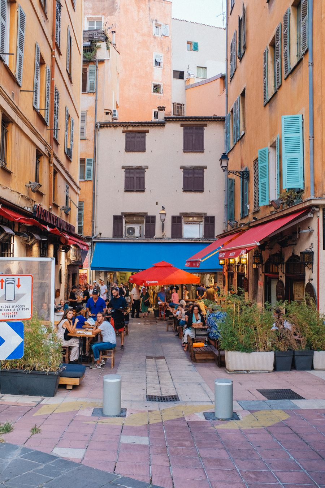
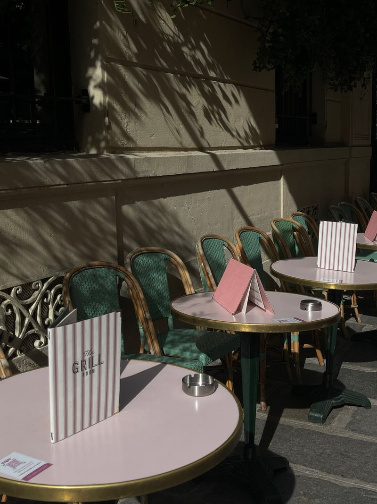
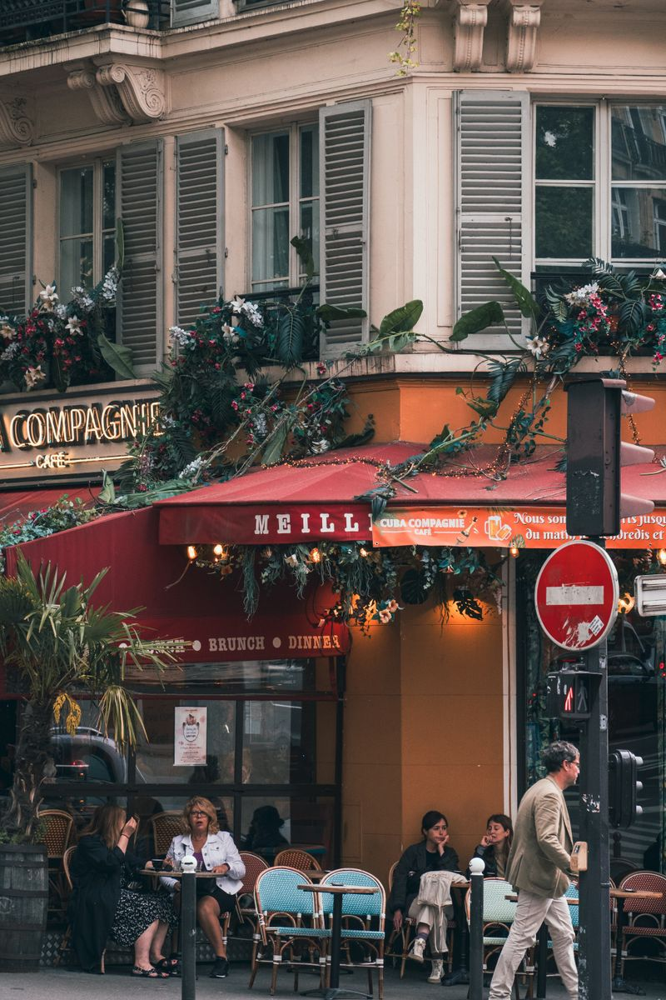
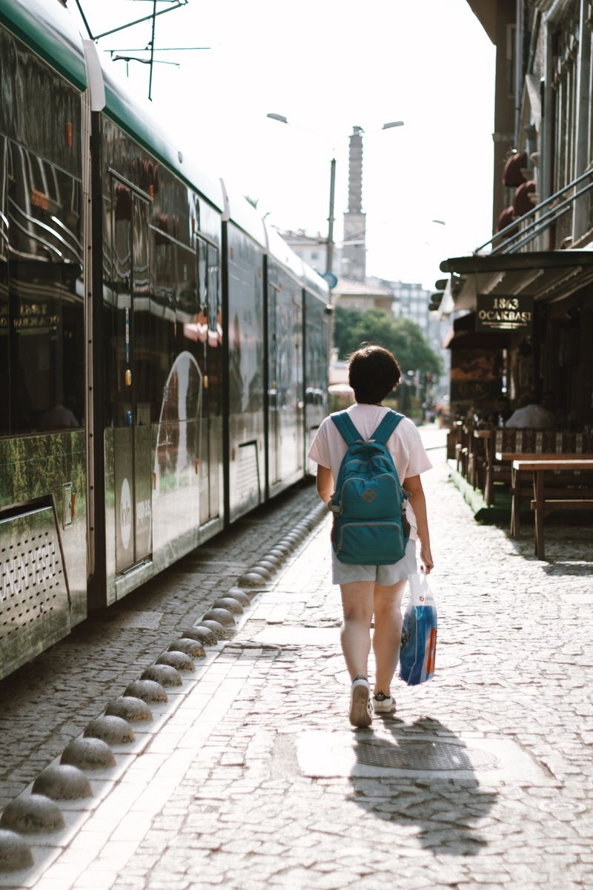
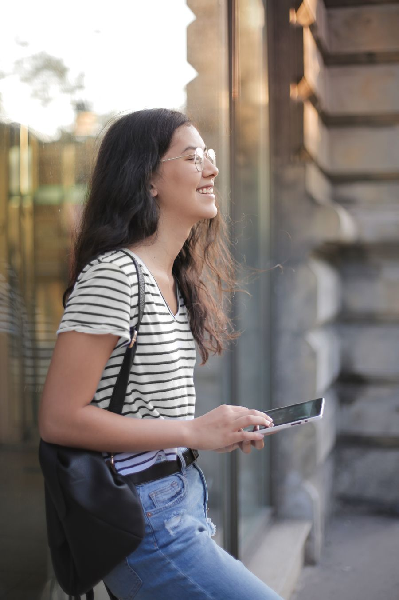

Zrób telefonem zdjęcie, które chcesz pokazać.
Masz w telefonie tysiące zdjęć, a żadne nie wygląda tak dobrze jak to, co widać na żywo? Na spacerze z Poza Kadrem uczysz się patrzeć: gdzie stanąć, kiedy nacisnąć i co zostawić poza kadrem. Wystarczy telefon, który masz w kieszeni.
Cztery przystanki, jedno lepsze zdjęcie.
Przewijaj powoli. Na każdym przystanku spaceru zmieniamy w zdjęciu jedną rzecz.
-
Przystanek 1
Wyprostuj horyzont
Krzywe kamienice widać jako pierwsze. Pokazujemy, jak włączyć siatkę w aparacie i trzymać telefon prosto bez zastanawiania się.
-
Przystanek 2
Złap światło
To samo miejsce w słońcu wygląda jak inna ulica. Uczysz się widzieć, skąd pada światło, i ustawiać jasność jednym ruchem palca.
-
Przystanek 3
Zostaw bałagan poza kadrem
Słup, znak, pół markizy. Zamiast przybliżać palcami, podchodzisz bliżej i stawiasz to, co ważne, na linii siatki.
-
Przystanek 4
Złap moment
Kadr gotowy. Czekasz, aż tramwaj wjedzie w słońce, ustawiasz ostrość jednym dotknięciem i naciskasz. To cierpliwość, a nie szczęście.
Przeciągnij i porównaj.
To samo miejsce i ten sam telefon. Różnica bierze się z kilku nawyków, które ćwiczymy na spacerze, aż przestaniesz o nich myśleć.
Na razie pokazujemy przykład ze zdjęcia z banku zdjęć. Wersję „przed” przygotowaliśmy sami: przechyliliśmy kadr, przyciemniliśmy go i odebraliśmy mu kolor. Tu pojawią się prawdziwe pary zdjęć uczestników.
Przykład · zdjęcie z Pexels · kadr 4:5
Miasto jest pełne kadrów.
Kolor, cień, detal i człowiek. Na spacerze uczysz się je zauważać. Poniżej przykłady z banku zdjęć, nie prace uczestników.





Dla każdego, kto robi zdjęcia telefonem i chce, żeby wreszcie wyglądały tak, jak to, co widać na żywo.
- Bez sprzętu
Nie potrzebujesz aparatu ani obiektywów. Ćwiczymy na telefonie, który już masz.
- Bez teorii
Żadnych wykładów o przysłonie. Uczysz się na ulicy, robiąc zdjęcia.
- Bez wstydu
Wszyscy zaczynamy od krzywej latarni. Spacer jest dla amatorów i takim tempem idzie.
Idziemy, patrzymy, fotografujemy.
Zbiórka
Spotykamy się w umówionym miejscu w mieście. Bierzesz tylko naładowany telefon.
Przystanki
Na każdym przystanku jedno ćwiczenie: poziom, światło, kadr albo moment.
Podpowiedzi
Fotografujesz swoim telefonem, a prowadzący podpowiada na bieżąco, co zmienić.
Twoje kadry
Na koniec wybieramy Twoje najlepsze zdjęcia i omawiamy, co w nich zadziałało.
Czas trwania spaceru, wielkość grupy i trasa. Przebieg powyżej to propozycja do potwierdzenia.
Kto prowadzi
Imię prowadzącego, kilka zdań o doświadczeniu i 2–3 zdjęcia jego autorstwa.
Co mówią uczestnicy
Miejsce na prawdziwą opinię uczestnika, z imieniem i za zgodą.
Miejsce na prawdziwą opinię uczestnika.
Miejsce na prawdziwą opinię uczestnika.
Zapisz się na spacer.
Zostaw imię i e-mail, wybierz porę, która Ci pasuje. Odezwiemy się z najbliższym terminem i miejscem zbiórki.
Najbliższe terminy, miejsce zbiórki i cena.